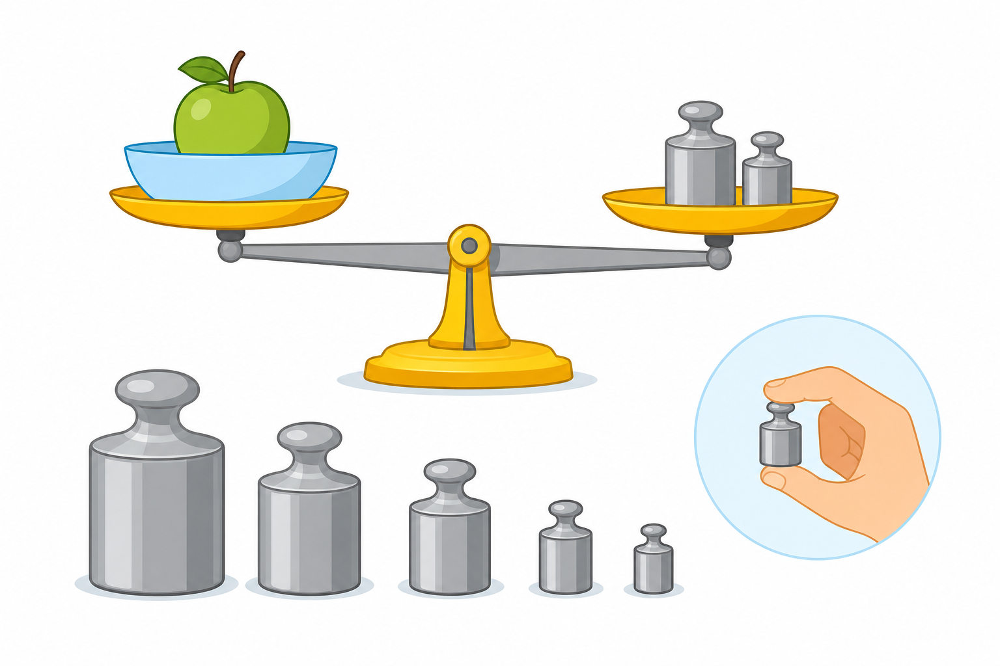

1
jednostki masy
одиниці маси

📘 Co to jest? Що це?
Masa mówi, jak ciężkie jest coś. W szkole najczęściej: kilogram i gram.
Маса каже, яке щось важке. У школі найчастіше: кілограм і грам.
⭐ Zapamiętaj Запам'ятай
t · kg · g · mg
Основна одиниця: кілограм (kg). Легкі речі — в грамах (g).
⚠ Nie pomyl Не плутай
- kg, g, tlitr (objętość)
✅ Przykłady Приклади
- mg, g, dag, kg, t
- waga w kg
- 1 kg = 1000 g
- 500 g mąki
- masa w gramach